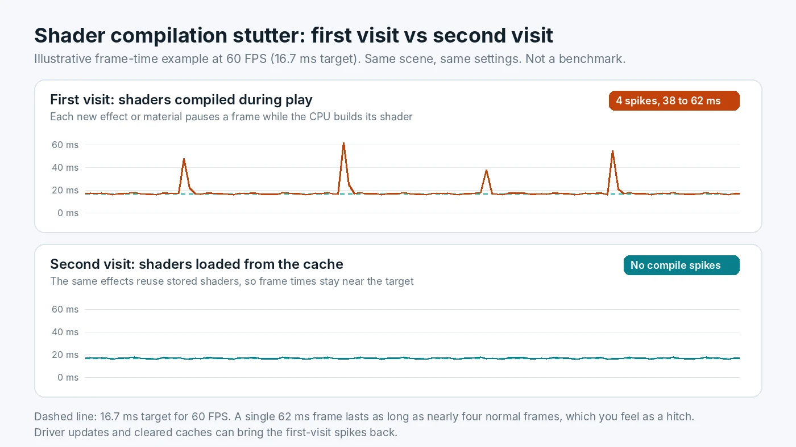

Shader Compilation Stutter: Why It Happens and How to Fix It
You start a new game on a capable PC, the frame counter looks healthy, and yet the picture freezes for a split second every time an explosion, a new enemy or a new room appears. Play the same section again and it is smooth. That pattern almost always points to shader compilation stutter. It is not a sign that your CPU or graphics card is too slow, and buying new parts rarely makes it disappear. This guide explains what is happening, how to recognize it, and the practical steps that reduce it.

What a Shader Is and Why It Needs Compiling
A shader is a small program that runs on the graphics card. Shaders decide how light falls on a surface, how smoke blends, how water reflects and how a character's skin looks. A modern game can contain thousands of combinations of them.
Games ship their shaders in an intermediate form, not as finished machine code. The reason is simple: every GPU family and every driver version understands slightly different instructions. A console has one fixed GPU, so its games can ship fully prepared shaders. A PC could have an NVIDIA, AMD or Intel card from any of several generations, so the final translation has to happen on your machine. That translation step is shader compilation, and it is done mainly by the CPU through the graphics driver.
In DirectX 12 and Vulkan games, shaders are bundled with other render settings into what developers call pipeline state objects, or PSOs. Creating a PSO can take anywhere from a fraction of a millisecond to many milliseconds. If the game needs one that does not exist yet, the frame has to wait.
Why Compiling During Play Causes Hitches
At 60 FPS the PC has about 16.7 ms to produce each frame. If a new effect appears and the game must build its pipeline right then, that work lands inside the frame. A compile that takes 40 ms turns one frame into a visible freeze, as the chart above shows. Several of them close together feel like the game is choking.
Older DirectX 11 games left more of this work to the driver, which could hide some of it. DirectX 12 and Vulkan hand the job to the game itself. That gives developers more control, but it also means a game that does not prepare shaders in advance can hitch noticeably. Microsoft itself describes runtime compilation as a cause of long compile times and "in-game shader stutter" for DirectX 12 apps. For the bigger picture, see our comparison of how DirectX 11, DirectX 12 and Vulkan split the work.
Once a shader is compiled, the driver saves it in a shader cache on your drive. The next time the game needs it, the driver loads it instead of rebuilding it. That is why a second play-through of the same area is usually smoother.
How to Tell Shader Stutter From Other Stutter
Several problems produce hitches, and they need different fixes. Shader stutter has a recognizable fingerprint:
- It happens the first time something appears. A new spell, weapon effect, enemy type or weather change hitches once, then plays smoothly afterwards.
- It improves with play time. The first hour is the worst. Replaying the same level feels better.
- It returns after a driver update. New drivers usually invalidate the saved cache, so the game has to compile again.
- Average FPS looks fine. The average barely moves, but the frame-time graph shows tall, isolated spikes.
Compare that with traversal stutter, which hits at the same spots every time you cross into a new area, often because the game is streaming in data. Running out of RAM or VRAM causes hitches that repeat and get worse over a session. A CPU that is maxed out all the time causes uneven frame pacing everywhere, not just on new effects. If your hitches do not match the shader pattern, work through the wider list of stutter causes instead. To watch frame times yourself, an overlay such as the one described in our guide to setting up a CPU and GPU usage overlay helps a lot.
Step 1: Let the Game Precompile Shaders
Many recent games include a shader preparation step, usually shown as a progress bar on first launch or after a patch. It can take a few minutes, especially on CPUs with fewer cores. Let it finish. Skipping it, or jumping into the game while it runs in the background, is the most common reason for heavy stutter in the first hour.
Some games also offer an option to rebuild shaders from the settings menu. If you changed GPUs, rolled back a driver or see graphical errors, running it again is a sensible first step.
Step 2: Keep the Driver Shader Cache Healthy
The driver cache is what turns a stuttery first visit into a smooth second one. A few settings affect it:
- NVIDIA. In NVIDIA Control Panel, under Manage 3D settings, there is a Shader Cache Size option. Leave it at Driver Default or set a larger size. Do not set it to Disabled, since that removes the cache entirely. A larger cache can help if you play many big games, because older entries are less likely to be pushed out.
- AMD. AMD Software: Adrenalin Edition keeps its own shader cache and includes a Reset Shader Cache option in its graphics settings. Use it only for troubleshooting, not as a routine tweak.
- Windows. Disk Cleanup lists a DirectX Shader Cache entry. Leave it unticked during normal clean-ups, because deleting it forces every game to compile again.
- Disk space. Keep some free space on the system drive. A nearly full drive can stop caches from growing and slows everything else down. Our tips on which Windows tweaks are worth your time cover other safe housekeeping.
Step 3: Expect a Rebuild After Driver Updates
Driver updates are still worth installing, since they often include game fixes. Just expect the first session afterwards to hitch a little more while caches rebuild. If you are about to play something competitive or record footage, update the day before and play a short warm-up session first. Avoid switching driver versions back and forth, because each change can trigger a fresh round of compiling.
Step 4: Use Store and Platform Features
Some platforms can deliver shaders that were compiled ahead of time, so your PC has less work to do.
- Advanced Shader Delivery. Microsoft's system lets developers upload shader data so the Xbox PC app can download precompiled shaders that match your hardware. Microsoft says it reached general availability in the Xbox PC app in June 2026 for supported games on Windows 11 24H2 or newer with AMD Radeon RDNA graphics and a recent Adrenalin driver, with other GPU vendors planned. It only works in games whose developers have enabled it.
- Steam shader pre-caching. Steam has a Shader Pre-Caching option in its settings. It mainly helps Vulkan and OpenGL games, which makes it most useful on Linux and Steam Deck. On Windows, most DirectX 12 games still compile on your PC, so leave it on but do not expect it to fix every title.
Step 5: Reduce the Cost of Each Hitch
You cannot always stop a game from compiling during play, but you can make each pause shorter and less noticeable:
- Close heavy background apps. Compiling competes with browsers, launchers and recording software for CPU time. If your processor already sits near full load in games, read what to do when the CPU sits at full load.
- Install games on an SSD. The compile itself is CPU work, but loading cached shaders and game assets is faster from solid-state storage. See how drive speed affects loading and streaming hitches.
- Use a frame rate cap and variable refresh. A steady cap and G-Sync or FreeSync will not remove a 50 ms spike, but they make the frames around it more even, so short hitches feel milder.
- Check for game patches. Developers often fix the worst shader stutter after launch by adding a precompile step or collecting missing pipelines. A patch can do more than any setting on your side.
Will New Hardware Fix It?
Partly, at best. A CPU with more and faster cores finishes precompile screens sooner and shortens each hitch, because compilation runs on the processor. But if a game builds shaders only at the moment it needs them, even a high-end processor will show some stutter on the first visit. A faster graphics card does almost nothing for this specific problem.
That is why shader stutter is a poor reason to upgrade on its own. If your PC also struggles once shaders are cached, with low FPS or weak 1% lows everywhere, then you may have a real hardware limit worth investigating.
Conclusion
Shader compilation stutter comes from the PC translating graphics programs for your exact GPU and driver, sometimes in the middle of gameplay. It shows up on first visits, after driver updates and after cache clears, then fades as the cache fills. Let precompile steps finish, keep the shader cache enabled, avoid needless cache deletion, and keep games patched. If stutter remains after the cache is warm, check whether a component is holding you back with the free PC Bottleneck Calculator.
Frequently Asked Questions
Does shader compilation stutter go away on its own?
Partly. Once a shader has been compiled and saved in the cache, the same effect usually plays smoothly the next time. That is why a level often feels better on a second run. A driver update or a cleared cache can bring the hitches back for a while.
Will a faster CPU fix shader stutter?
It can shorten each hitch and speed up precompile screens, because compiling runs on the processor. It rarely removes the problem completely. If a game compiles shaders during play, even fast CPUs can show some hitches.
Should I delete my shader cache?
Only as a troubleshooting step, for example if a game started crashing or showing graphical errors after an update. Deleting the cache forces every shader to be rebuilt, so the next sessions usually stutter more, not less.
Does more RAM or VRAM stop shader stutter?
Not directly. Shader compilation is mostly limited by CPU time and by when the game chooses to compile. Running out of RAM or VRAM causes its own stutter, which repeats every time rather than only on the first visit.
Is shader stutter worse in DirectX 12 games?
It is more common there. DirectX 12 and Vulkan give the game, not the driver, control over when shaders are compiled. Games that prepare them in advance run smoothly, while games that compile on demand can hitch noticeably.
Sources
Official documentation and tools referenced in this guide: